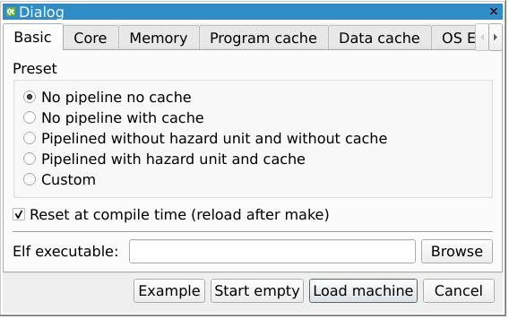
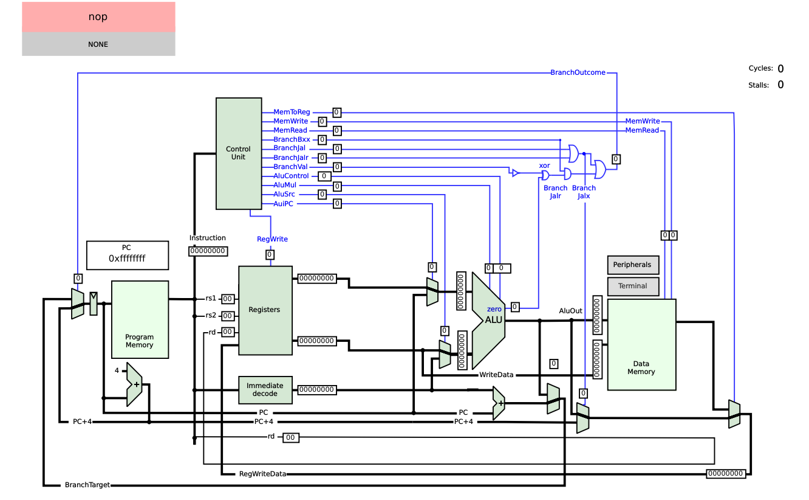
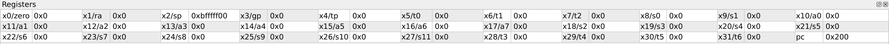
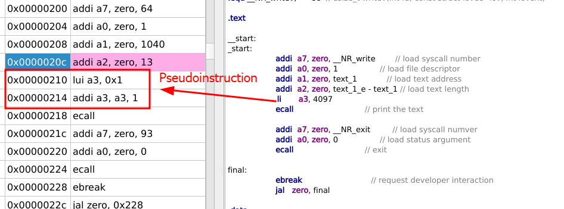
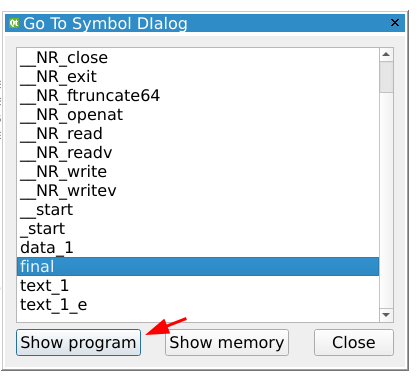
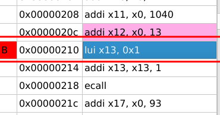

prev > index
In this session you should be provided with a RISC-V programming reference card. In this reference card you will find the following useful information:
- RV32I instructions
- C compiler data sizes
- All RISC-V pseudoinstructions and their assembly translation
- The stack layout of method calling convention
- The RISC-V CSR registers (That we will not use in this practice)
GNU assembler directives
Some general GNU assembler directives are essential when writing code.
- We use the
.textand.dataassembler macros to divide our code (in the text section) and program data (in the data section). - We use the
.globlassembler directive to define that a procedure label should be available for linking with other parts of the code. This is specially useful for linking assembly procedures with other files. - We use the
.word,.asciiand.ascizto declare variables with numbers or strings in our.datasection. Words are used for defining integers, while.asciiand.ascizare used for defining strings. The difference between.asciiand.ascizis that.ascizappends a trailing zero to all strings, while.asciidoes not. As such, a two letter string would take 2 bytes in ascii and three bytes in asciz. - We use the
.equto define assembler macros. Where.equ SERIAL_PORT BASE 0xffffc000would define a text substitution of the stringSERIAL_PORT_BASEwith the string0xffffc000in our code. - We use the
.orgdirective to change the program address of the following data. This directive can be used in.textand.dataregions. When used in text regions it defines the starting address where the program code will be stored. When used in data regions it defines the starting address where the data is stored.
The QTRVSIM simulator
In this practice we will use the QtRvSim RISC-V architecture simulator. This simulator will be used in multiple practices, thus, I advice you to take your time and familiarize yourself with it.
When you open the QTSim simulator the following window will appear:

Here, you should select the No pipeline no cache preset, as the processor we studied today is the simplest processor you can implement. Don’t worry, when we complete the units Microprocessors and codesign reinforcement and RISC-V based system architecture you will be familiar with every preset presented. For now, let’s select the simpler configuration to learn how assembly works. Click on the start empty button.

Now you are presented with all the building blocks of our processor. From program memory (where we store the instructions), the PC (Wich points to the currently-executing instruction), the registers (Where we store the data that we are operating on), the ALU (Where arithmetic and logic operations are performed) and the data memory (Where data is stored).
This simulator is able to execute all RISCV32IM code, as it implements the Integer and Multiplication extensions.
A window with the status of the register file can be opened clicking → Windows\Registers

A window with the program code can be open by clicking → Windows\Program resulting in the window below opening. The currently executing instruction is highlighted.

However, using this window to debug the assembler code can prove hard, as some instructions are translated into pseudoinstructions, breaking your code structuring. To ease debugging we can break up or code into sections with labels such as the above code, where the code is broken down into two labeled sections: startand final
To go into the assembler code corresponding to the final section we use the Machine\Show Symbol feature. Selecting the final symbol and clicking show program

Furthermore, one can set breakpoints in their assembler program by clicking in the Bp field, as shown below. If the program is ran with the Machine\Run command and encounters an instruction with a breakpoint, it’s execution will pause. Breakpoints are useful to examine the program behavior in certain sections of code where the programmer suspects a bug is pressent.

Exercises
Exercise 1. first assembly program
Let’s start reading and programming assembly code.
Look at the following code snippet and answer the following questions
- What math operation is defined as s2 result?
- Which memory address does P have?
- Which value will the P address have at the end of the execution?
.text
_start:
la t0, A
la t1, B
la t2, P
lw s0, 0(t0)
lw s1, 0(t1)
add s2, s1, s0
add s2, s2, s2
sw s2, 0(t2)
.data
.org 0x400
A: .word 3
B: .word 2
P: .space 4Now that we understand this piece of code let’s execute it.
In our simulator, let’s create a new program by clicking → File\New source and then opening the unknown tab in our program.
In this file, paste the code presented in ^ex1code. Then, open the register file and memory contents in Windows\Registers and Windows\Memory
Run the program and check the values in registers s0,s1 and s2 and the value of the memory address of P. Are this values what you expected?
Upload your answers in a file named
exercise1.sto poliformat
Exercise 2: control flow
Let’s check your knowledge of control flow by implementing the following C++ code into assembly:
int list[] = {2,1};
i = 1;
if (list[i-1] > list[i]) {
swap(&list[i-1], &list[i]);
}Translate the above code into assembly by using the template below:
.text
.globl _start
_start:
la a0, list
li a1, 1
#WRITE YOUR CODE HERE, you must use the provided a0 and a1 registers
.data
.org 0x400
list:
.word 5, 2Write your solution into a file called
exercise2.sand attach it in poliformat
Exercise 3: Calling conventions and stack
Let’s take the case that I am writing an assembly program where I need to call a function foo. Which registers should I save before doing so? Where should I save such registers? Remember consulting the provided reference card calling conventions. Write the necessary procedure to call and return from foo preserving the t0,t3, a0 and a3, use the template below:
.text
.globl _start
# Set all registers to some value
li t0, 1
li t3, 2
li a0, 3
li a3, 4
## WRITE YOUR CODE to save the previously set registers here
jal foo
## WRITE YOUR CODE to restore the saved registers here
# Check if all registers have the correct value
addi t0, t0, -1
bnez t0, error
addi t3, t3, -2
bnez t3, error
addi a0, a0, -3
bnez a0, error
addi a3, a3, -4
bnez a3, error
pass:
li a7, 97 #; Exit syscall
li a0, 0 #; Exit without error
ecall #; Exit, success
error:
li a7, 97 #; Exit syscall
li a0, 1 #; Exit with error
ecall #; Exit, failure
foo:
addi t0, t0, 1
addi t3, t3, 1
addi a0, a0, 1
addi a3, a3, 1
retWrite your solution into a file called
exercise3.sand attach it in poliformat
Exercise 4: Bubble sort
Bubble sort is a sorting algorithm known for it’s simplicity. It sorts an array of numbers in an ascending or descending order.
For this exercise, we will translate the following bubble sort code into RISC-V assembly following the contents studied in the class.
void swap(int *addr0, int* addr1){
int temp = *addr0;
*addr0=*addr1;
*addr1=temp;
}
void bubsort(int *list, int size) {
bool swapped;
do {
swapped = false;
for (int i = 1;i < size;i++) {
if (list[i-1] > list[i]) {
swap(&list[i-1], &list[i]);
swapped = true;
}
}
} while (swapped);
}Remember that your procedure processes arguments using the a[x] registers. In this function, your procedure receives the list address in register a0 and the size of the array to sort in register a1. For simplicity, we divided the bubble sort algorithm into two methods, swap and bubsort. Please implement and test them separately.
Here is the main function that calls and tests your bubble sort code:
.text
.globl _start
_start:
la a0, swap_space
addi a1, a0, 4
jal swap
verify_swap:
la a1, swap_space
lw a0, 0(a1)
li a2, 1
bne a0, a2, fail
lw a0, 4(a1)
bne a0, zero, fail
la a0, list #; Load address of the list into a0
li a1, 7 #; Size of the list in a1
jal bubsort #; Call the bubble sort function
#; Verification loop (compare sorted list to expected list)
la t0, list #; Load address of the sorted list
la t1, expected_list #; Load address of the expected sorted list
li t2, 7 #; List size
verify:
beqz t2, pass #; If size is zero, list is sorted correctly
lw t3, 0(t0) #; Load current element from sorted list
lw t4, 0(t1) #; Load current element from expected list
bne t3, t4, fail #; If the elements don't match, test failed
addi t0, t0, 4 #; Move to next element in sorted list
addi t1, t1, 4 #; Move to next element in expected list
addi t2, t2, -1 #; Decrease list size counter
j verify #; Repeat for the rest of the list
pass:
li a7, 97 #; Exit syscall
li a0, 0 #; Exit without error
ecall #; Exit, success
fail:
li a7, 97 #; Exit syscall
li a0, 1 #; Exit with error
ecall #; Exit, failure
swap: #; swaps a0 and a1 values
#;a0: address of first value to swap
#;a1: address of second value to swap
#; YOUR CODE GOES HERE
bubsort:
#; a0: Integer list to sort
#; a1: Length of the list to sort
#; YOUR CODE GOES HERE
.data
.org 0x400
list:
.word 10, 5, 3, 8, 12, 2, 7 #; Example unsorted list
size:
.word 7 #; Size of the list
expected_list:
.word 2, 3, 5, 7, 8, 10, 12 #; Expected sorted list
swap_space:
.word 0, 1Write your solution into
exercise4.sand attach it in poliformat
Exercise 5: ASM bubble sort with C++ code
If you want to compile this program and are on a windows computer, please download the RISC-V crosscompiler from this link and execute all commands from windows PowerShell.
Now we provide the testcase in C++. Adapt the previously-coded bubble sort algorithm so that it can be integrated into the following C++ program. Compile it and execute it in the simulator. Remember, if you want to use callee saved registers you need to push them into the stack.
main.cpp
// Declaration of the external bubble sort function in assembly
extern "C" void bubsort(int* list, int size);
// Verification function to compare two lists
bool verify(const int* sorted_list, const int* expected_list, int size) {
for (int i = 0; i < size; i++) {
if (sorted_list[i] != expected_list[i]) {
return false; // Lists do not match
}
}
return true; // Lists match
}
int main() {
int list[] = {10, 5, 3, 8, 12, 2, 7}; // Example unsorted list
int size = 7; // Size of the list
int expected_list[] = {2, 3, 5, 7, 8, 10, 12}; // Expected sorted list
// Call the bubble sort function
bubsort(list, size); // Pass the array and size
// Verification: compare the sorted list with the expected list
if (verify(list, expected_list, size)) {
__asm__(
"li a7, 97\n\t"
"li a0, 0\n\t"
"ecall"
);
return 0; // Success
} else {
__asm__(
"li a7, 97\n\t"
"li a0, 1\n\t"
"ecall"
);
return 1; // Failure
}
}bubsort.s
.section .text
.global bubsort
bubsort:
# Arguments:
# a0: address of the list (array)
# a1: size of the list
#WRITE bubble sort code here
ret # return from functionTo compile this program, we will need a C++ compiler. However, the windows machines in our laboratory are x86, and we want to compile RISC-V code. That’s why we need a crosscompiler.
Crosscompilers are tools that are able to produce code for different architectures to those that they are compiled for. In this case, our host architecture is a x86 computer, while our target architecture is RISC-V. We provide the RISC-V gnu toolchain to compile RISC-V binaries from our x86 architecture. All toolchain utilities are accessible from the terminal with the prefix riscv64-unknown-elf-(program_name).exe
Once your bubsort.s code is completed create a new file in the directory where you stored your main.cpp and bubsort.s with the name crt0local.s with the following contents
/* minimal replacement of crt0.o which is else provided by C library */
.globl main
.globl _start
.globl __start
.option norelax
.text
__start:
_start:
.option push
.option norelax
la gp, __global_pointer$
.option pop
la sp, __stack_end
addi a0, zero, 0
addi a1, zero, 0
jal main
quit:
addi a0, zero, 0
addi a7, zero, 93 /* SYS_exit */
ecall
loop: ebreak
beq zero, zero, loop
.bss
__stack_start:
.skip 4096
__stack_end:
.end _startThis file is used to set all needed variables for calling our cpp main function.
Once you have all three files navigate with your console into the target directory and compile your program using the following command:
riscv64-unknown-elf-gcc.exe -march=rv32i -mabi=ilp32 -nostdlib .\crt0local.s .\bubsort.s .\main.cpp -lgcc -o bubsort.elfThis will produce the bubsort.elf binary in your directory. To disassemble this RISC-V binary and see the compiled contents execute the following command:
riscv64-unknown-elf-objdump.exe -S bubsort.elf > my_compiled_code.s
Execute the bubsort.elf binary in the simulator by clicking
File->New simulation->Elf executable (your file) -> Load machine
and verify that everything works correctly.
Zip your
main.cpp,bubsort.s,crt0local.sandbubsort.elfinto a zip file calledexercise5.zipand upload it to poliformat